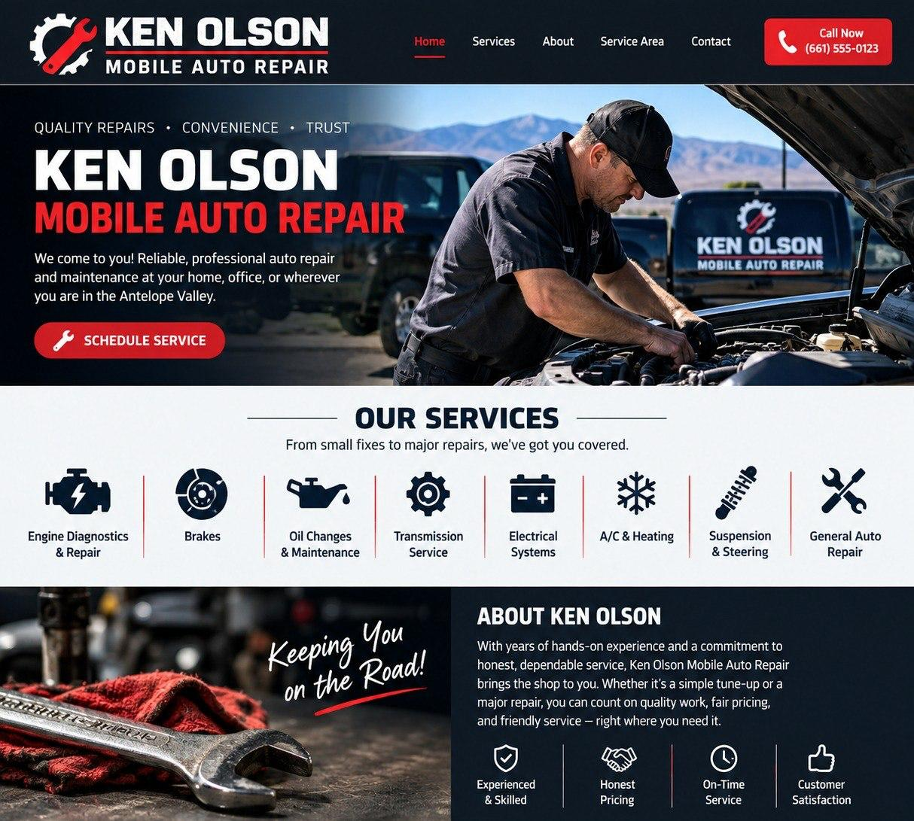

Engine
Diagnostics
Check-engine lights, running issues, and no-start troubleshooting.

QUALITY REPAIRS • CONVENIENCE • TRUST
The shop comes to you. Auto repair and maintenance at your home, office, or wherever you need help in the Antelope Valley.
Call or text (661) 582-2891
From everyday maintenance to finding what’s wrong, Ken brings the tools to you.
Check-engine lights, running issues, and no-start troubleshooting.
Brake concerns, pad and rotor replacement, and repair.
Keep up with routine oil and filter maintenance.
Help tracking down starting, charging, and electrical problems.
Get help with ride, handling, and steering concerns.
Tell Ken what’s happening and discuss the repair you need.
Call with your vehicle’s year, make, model, and symptoms to confirm service availability.
YOUR LOCAL MOBILE MECHANIC
Car trouble shouldn’t mean rearranging your whole day. Ken Olson’s Mobile Mechanics brings auto repair and maintenance to your location in the Antelope Valley.
From a check-engine light to routine maintenance, talk directly with Ken about what your car needs and arrange service that works for you.
RIGHT WHERE YOU NEED US
Mobile mechanic service for Palmdale, Lancaster, and the surrounding Antelope Valley.
Send Ken your location and vehicle details to confirm coverage and arrange a visit.
Text your location to Ken ↗Have your vehicle’s year, make, model, location, and a short description of the issue ready.
☎ Call KenText KenAppointments and repair availability are confirmed directly with Ken.